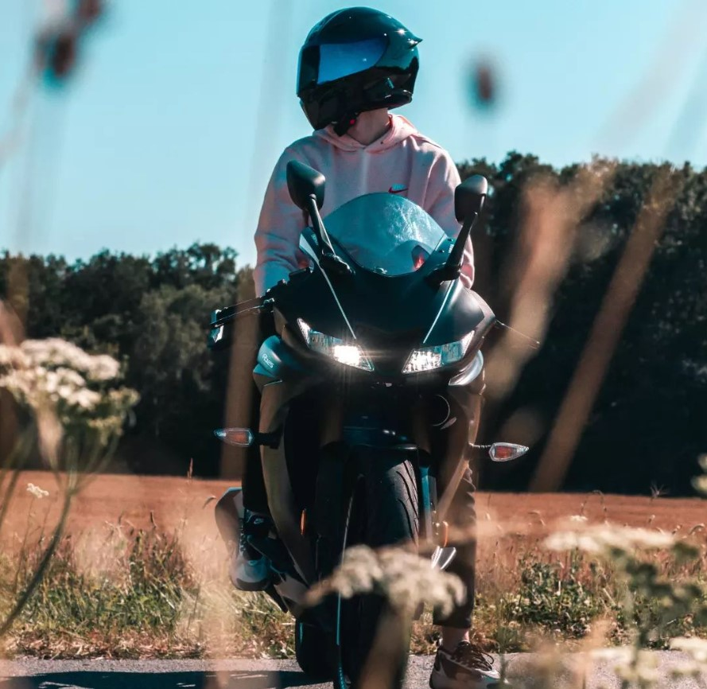

Informations personnelles
Je m'appelle Lucas Beguin, je suis né le 13 décembre 2004 et je suis actuellement en terminal technologique spécialité SIN. Je me dirige vers des études d'informatique car cela semble une suite logique pour moi ayant baigné toute ma vie dans les jeux vidéos et l'informatique en général. Cependant après 1 an en section informatique, cette filière ne me plaisant pas car jugée trop peu créative à mon goût je souhaite me réorienter en section MMI.
Mes passions
-

Moto
J'aime passer du temps à travailler sur ma moto et à faire des balades avec des amis.
-

Jeux vidéo
Je suis un grand fan de jeux vidéo et j'aime créer des mods et des plugins pour Minecraft en Java.
-
Montage photo/vidéo
Je m'amuse souvent à créer des montages photo et vidéo pour mes amis et ma famille.
Projets personnels
-
Mods/plugins en Java sur Minecraft
J'ai créé plusieurs mods et plugins en Java pour Minecraft, qui sont disponibles sur mon profil GitHub.
-
Montages photos de ma moto
J'ai créé plusieurs montages photo de ma moto, en utilisant des logiciels de retouche photo.
-
Joystick en Arduino
J'ai réalisé un projet d'école consistant à configurer un joystick en Arduino pour pouvoir retranscrire les mouvements produits.
Projets d'école
Il s'agit d'un joystick qu'il a fallu configurer en Arduino pour pouvoir retranscrire les mouvements produits.